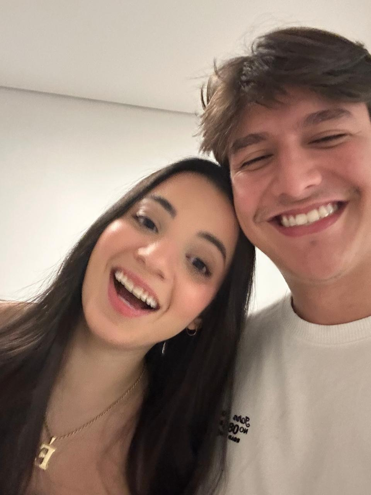

Feliz aniversário,Princesa
Dizem que existe um fio vermelho, invisível, ligando duas pessoas que estão destinadas a se encontrar. O nosso é comprido: atravessa a distância inteira e chega até você.
desce devagar

Amor,
Quero te desejar um feliz aniversário que o seu dia seja cheio de alegria assim como você é pra mim, com momentos especiais e inesquecíveis. Que essa data se repita muitas e muitas vezes, e que a gente possa aproveitar sempre junto essa data especial.
Curta muito o seu dia. Um beijo cheio de saudades.
Os primeiros momentos
Quando a gente ainda estava aprendendo a tirar foto junto.
Atualizando...
Cada encontro com você é um presente pra mim.